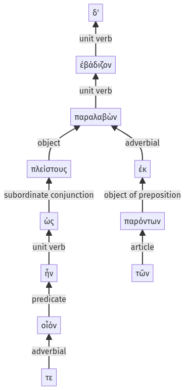

Lysias, Oration 1, 1.24.1-1.24.11a
1.23.52-1.23.76a | 1.24.28-1.24.52a
Sentence 67
1.24.1-1.24.11a
παραλαβὼν δ' ὡς οἷόν τε ἦν πλείστους ἐκ τῶν παρόντων ἐβάδιζον.
2 παραλαβὼν
3 ὡς οἷόν τε ἦν
2 πλείστους ἐκ
3 τῶν παρόντων
1 ἐβάδιζον
παραλαβὼν δ' ὡς οἷόν τε ἦν πλείστους ἐκ τῶν παρόντων ἐβάδιζον.
Highlighting:
- connecting words
- unit verb
- subject
- object
Color code:
- independent clause (level 1, intransitive verb)
- circumstantial participle (level 2, transitive verb)
- subordinate clause (level 3, linking verb)
- attributive participle (level 3, intransitive verb)
